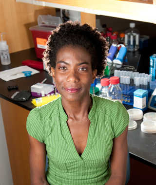

News Archives : 2012 : New Course: MCB 121 [Prof. Karine A. Gibbs]
by Karine A. Gibbs
August 30, 2012

Professor Karine A. Gibbs
Meeting Time: Tu., Th., 10-11:30 a.m., plus a one-hour section each week
Location: Biolabs 2062
Prerequisites: LS 1a, 1b, or by permission of instructor
Microbiologists, by nature, are both generalists and specialists-- we study those creatures that are largely invisible to the naked eye, including bacteria, viruses, prions, and small parasites. Many microbes are composed of a single cell or up to just a few hundred cells, but nonetheless these organisms are capable of sophisticated behaviors-- as individuals, very often as complex communities, and as agents within their environment.
As a result of their relatively simple form yet remarkable behavioral capability, microbes provide a rich source of interesting phenomena to study. They often provide a tractable approach to answering questions beyond the microbial realm that may otherwise be too complex to tackle directly, and increasingly they serve as a powerful tool for engineering. For example, microbiologists study ways to combat infections, bio-weapons, and global warming. We engineer processes for manufacturing medications and bio-fuels, and for environmental remediation. And we study the foundations of food, from preparation of cheese, to methods for preservation, to probiotics.
Thus, to practice microbiology, one must deploy knowledge and techniques from many different subspecialties of biology and other sciences, ranging from basic chemistry and molecular biology, to organismal and population biology, and beyond. MCB 121 is a general microbiology course; as such, we will cover a broad sampling of the many scientific disciplines involved in studying the varied microbial world. Articles from multiple media sources will be incorporated into the course.
For additional questions, please e-mail Prof. Gibbs
Download pdf of course description
View the course website for MCB 121